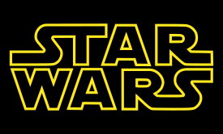

• O senhor dos aneis

• Resumo
O Senhor dos Anéis é um livro de alta fantasia, escrito pelo escritor britânico J. R. R. Tolkien.
Escrita entre 1937 e 1949, com muitas partes criadas durante a Segunda Guerra Mundial, a saga é uma continuação de O Hobbit.
• Gênero
Literatura fantástica, Alta fantasia, Romance de cavalaria, Ficção de aventura, Fantasia heroica
Atores Principais
- Elijah wood Como Frodo Bolseiro

- Ian Mckellen Como Gandalf
- Orlando Bloom Como Legolas
- Viggo Mortensen Como Aragorn
- Sean Astin Como Samwise Gamgee
Atores coadjuvantes
- Sean Bean Como Boromir
- Billy Boyd Como Pippin
- Dominic Monaghan Como Merry

- Andy Serkis Como Gollum
- John Rhys-davies Como Gimli
• Star Wars

• Resumo
Star Wars é uma franquia do tipo space opera estadunidense criada pelo cineasta George Lucas,
que conta com uma série de nove filmes de fantasia científica e dois spin-offs.
• Gênero
Ação, Ficção científica, Aventura, Fantasia
Atores Principais
- Mark Hamill Como Luke Skywalker
- Harrison Ford Como Han Solo
- Carrie Fisher Como Princesa Leia Organa
- Alec Guinness Como Ben Obi-ean Kenobi
- Peter Mayhew Como Chewbacca
Atores coadjuvantes
- Kenny Baker Como R2-d2
- Anthony Daniels Como C-3po
- Peter Cushing Como Grand Moff Tarkin
- David Prowse Como Darth Vader
- Phil Brown Como Tio Owen
• Shingeki no Kyojin

• Resumo
Shingeki no Kyojin também conhecido pelo título em inglês Attack on Titan,
é uma série de mangá escrita e ilustrada por Hajime Isayama.
• Gênero
Ação, Fantasia sombria, Ficção pós-apocalíptica, Drama
Atores Principais
- Yūki Kaji Como Eren Yeager
- Hiroshi Kamiya Como Levi Ackerman
- Yui Ishikawa Como Mikasa Ackerman
- Romi Paku Como Hange Zoë
- Yū Kobayashi Como Sasha Blouse
Atores coadjuvantes
- Marina Inoue Como Armin Arlert
- Yoshimasa Hosoya Como Reiner Braun
- Yū Shimamura Como Annie Leonhart
- Koyasu Takehito Como Zeke Yeager
- Hitch Dreyse Como Kenny Ackerman